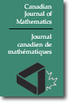
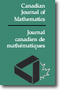

|
|

|
Frank Sottile's
Service Activities
Shame on Elsevier.
Elsevier
publishes fake Journals.
Join the Elsevier
Boycott.
|


|
 |
American Institute of Mathematics
open textbooks initiative.
While no longer a member of the editorial board, I strongly support their work.
|
Other journals on whose boards I have served:
 


|
|
Letters of Recommendation.
Before asking me for a letter, please read
this.
|
Editing
Scientific Committees
-
Programme Committee,
Canadian Discrete and Algorithmic Mathematics CanaDAM 2023,
Winnipeg, Manitoba, Canada, June 5–8, 2023.
- Co-Chair, Executive (Programme) Committee,
MEGA 2024, Leipzig,
Germany, 29 July–2 August 2024.
- Advisory Board, MEGA: Effective Methods in Algebraic Geometry,
Since 2000s.
- Member of BIRS
Scientific Advisory
Board 2017– Appointed for a second term.
- Member of CIMPA, 2018—
An article about CIMPA and
my involvement in CIMPA. These appeared in the January 2018
Bulletin of the International Association of Mathematical Physics.
I am also affiliated with the PREMA initiative, funded by the Simons Foundation.
Professional Societies
Conference Organization
-
ICERM Hot Topics Workshop on Algebraic Geometry in Spectral Theory,
24–26 February 2023.
Reading List.
-
Texas Algebraic Geometry Symposium,
Texas A&M University,
30 September – 2 October, 2022.
- AMS Special session on
Applicable and Computational Algebraic Geometry,
Fall 2017 Central Section Meeting 9–10 September 2017, University of North Texas, Denton, TX.
- AMS Special session on
Applicable and Computational Algebraic Geometry,
Fall 2017 Central Section Meeting 9–10 September 2017, University of North Texas, Denton, TX.
- SIAM Conference on Applied Algebraic Geometry
(AG17) July 31–August 4, 2017,
Georgia Institute of Technology, Atlanta, Georgia. Programme committee and
minisymposium organizer.
- CIMPA Research School
Combinatorial and Computational Algebraic Geometry,
University of Ibadan, Nigeria.
11—24 June 2017.
- SIAM Minisymposium on
Applied Algebra and Geometry,
Joint Mathematics Meetings, 6 January 2017, Atlanta, GA.
-
Pi Day of the Century at Texas A&M.
Co-organized with Kaitlyn Phillipson.
College of Science
press release.
Refereeing and Reviewing
Outreach
Current Advisees
-
Thomas Yahl, TAMU Graduate Student.
-
Matthew Faust, TAMU Graduate Student.
-
C.J. Bott, TAMU Ph.D. Student.
-
Jordy Lopez-García, TAMU Ph.D. Student.
-
Merri Stillman, TAMU Master's Student.
-
A.J. Perea, TAMU Master's Student.
-
Osman Quinteros, TAMU Master's Student.
-
Jonah Robinson, TAMU Master's Student.
|
|

{kind=link}